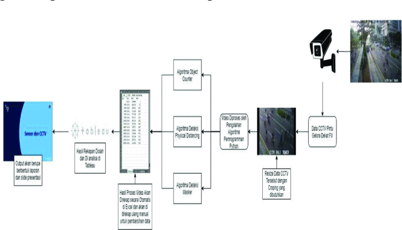
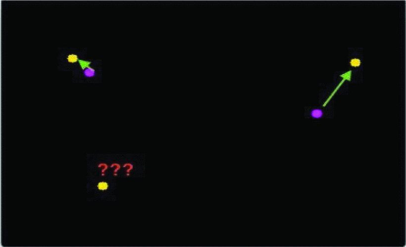
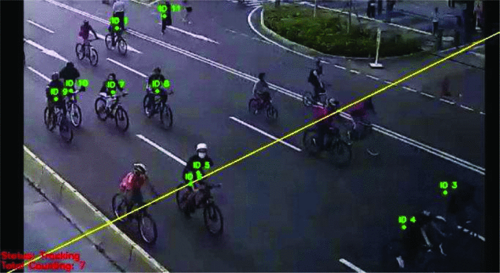
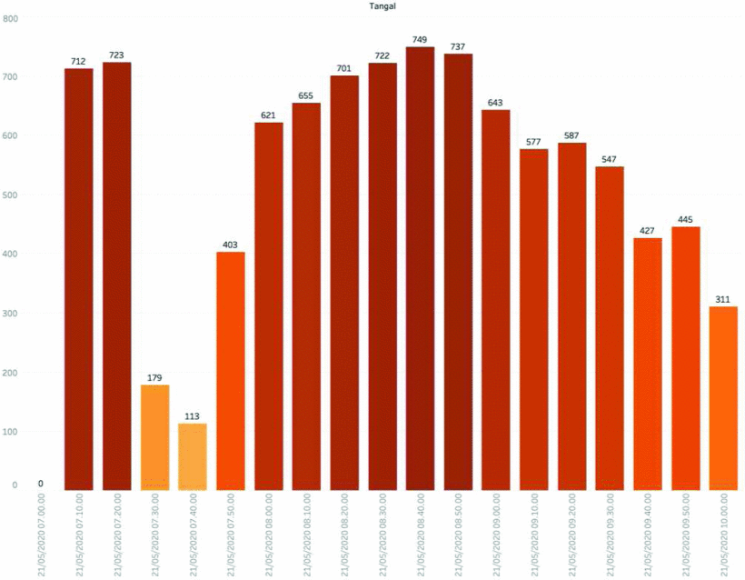
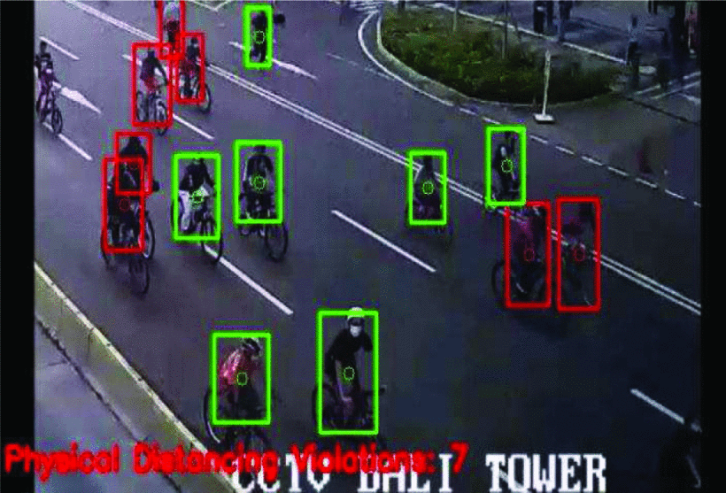
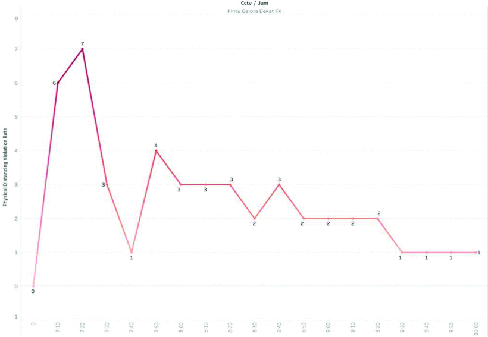
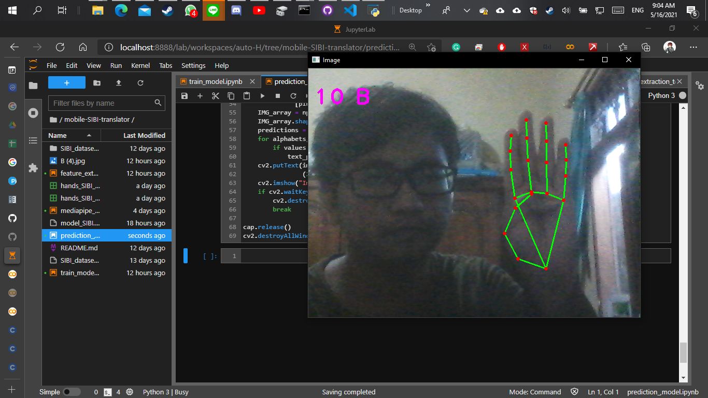
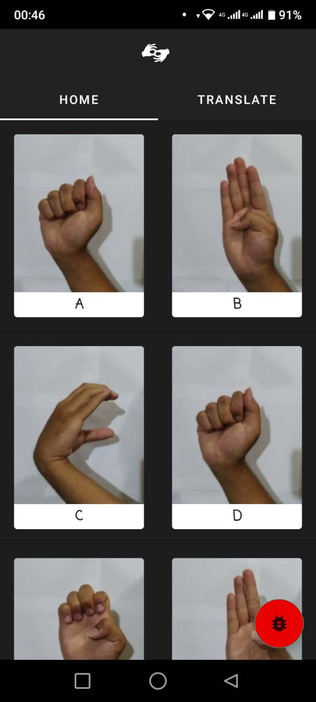
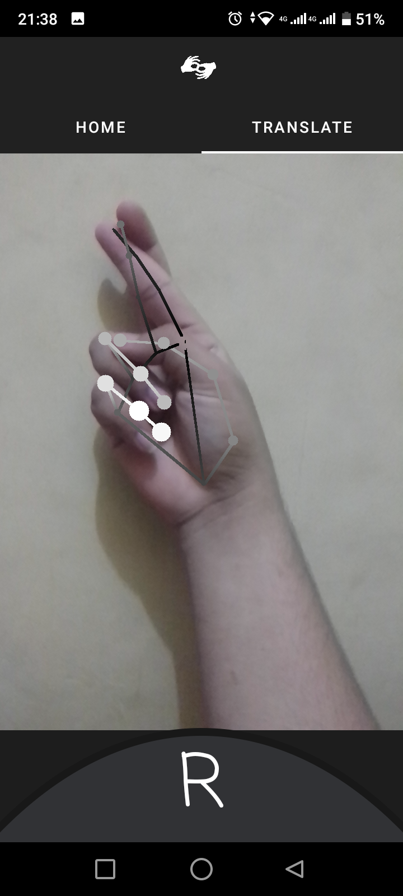

A computer vision-based object detection and counting for COVID-19 protocol compliance: a case study of Jakarta
About the project
Paper discusses the importance of vehicle detection and counting systems, mainly using Closed-Circuit Television (CCTV) installations in Jakarta for
public monitoring. These CCTVs aid in identifying congestion points, ensuring security, and monitoring activities. However, the primary focus now is
on controlling the spread of COVID-19. The government implemented large-scale social restrictions, transitioning to the new normal phase, which saw an
increase in reported cases. To address this, the paper proposes using AI-integrated CCTV systems to optimize surveillance and monitor compliance with
COVID-19 protocols, including mask-wearing and social distancing. This approach can effectively support the government in implementing large-scale
social restrictions (PSBB).
Solutions & Methods
This paper reports the analysis of the proposed system for monitoring and supporting public activities in order to carry out social restrictions, specifically in
the DKI Jakarta province. The proposed systems are YOLO and MobileNet SSD as its main weight to help this detection system with 30% and 40% confidence, respectively.
The results of object counting and physical distancing are expected to be a guideline for public complaints in the future by using several CCTV locations points
with better image quality and better angles.

Business Process Illustration
The Object Counting method on this CCTV uses Pseudocode as follows:
- The application of Object Detection to detect everything in the video (in Object Counting, this is devoted to people only) and in this object detection, we used 40% confidence for person detection as a minimum probability to filter weak detections as we will use it in MobileNet SSD.
- Then, each detected object is given an ID to perform tracking of the object that is already in the detection.
- Given a line as a mark when the tracking object touches and crosses the line it will be marked as a calculated object
Also, the Physical Distancing detection method on this CCTV uses Pseudocode as follows:
- Apply Object Detection to detect everyone (only people) in a video or image and this object detection; we used 30% confidence for person detection as a minimum probability to filter weak detections as we will use it in YOLO.
- Calculate the distances between every person that has detected.
- Based on this distance, check to see if there are two separate people less than N pixels.
As mentioned previously, we used object tracking in Object Counting pseudocode. In this tracking, we used an algorithm called centroid tracking algorithm. The centroid tracking algorithm works, as follow:
- We are accepting bounding box coordinates for each object in every frame (presumably by some object detector).
- We are computing the Euclidean distance between the centroids of the input bounding boxes and the centroids of existing objects that we already have examined.
- They are updating the tracked object centroids to their new centroid locations based on the new centroid with the smallest Euclidean distance.
- Moreover, if necessary, marking objects as either "disappeared" or deregistering them completely.

Centroid Tracking uses Euclidean distance to find the nearest detected object as tracking.
Result & Analysis
Object Counting: Human Counting
We can see the number of participants from the CFD (Car Free Day) on 21 May 2020, taken from the CCTV on the main door of Gelora FX.
CCTV data is taken every 10 minutes; dark red data indicates that the data is the highest, and what if the yellow data shows the least data.
Data retrieval is taken from 07:00 a.m to 10:00 a.m. The data showed that there is an increase in CFD participants at 08:00 a.m to the top
point at 08:40 a.m.

Object Counting result process.

People counting chart every 10 minutes.
Large-Scale Social Restriction Violation Detection
Large-scale social restriction detection shows the number of offenders Physical Distancing from participants Car Free Day (CFD) that have been
monitored through CCTV Pintu Gelora near FX. In this data, the offenders Physical Distancing burst at 07:10 am until 07: 20 am and then decreased
violators from 07:30 am until 10:00 am. Based on these data, the highest peak rate was seven violations. Why do these hours look crowded?
According to CCTV monitoring and field monitoring that at that time was the peak where a large number of participants had begun to carry out
sports or any activities at the car-free day event at that time. Therefore, it could increase the high transmission rate of the COVID-19 virus
in public spaces. Meanwhile, these data show that the lowest average is one violation and that only when CFD will end.

Large-scale social restriction detection result process.

Graph of the average violation of large-scale social restrictions.
Further Reading the Paper
You can find our paper to this link:
Authors
- Muhammad Lanang Afkaar Ar || Computer Engineering, School of Electrical Engineering, Telkom University, Bandung, Indonesia
- Sulthan Muzakki Adytia S || Computer Engineering, School of Electrical Engineering, Telkom University, Bandung, Indonesia
- Yudhistira Nugraha || Department of Communication, Informatics, and Statistics, Jakarta Smart City, Jakarta, Indonesia || School of Computing, Telkom University, Bandung, Indonesia
- Farizah Rizka R || Department of Communication, Informatics, and Statistics, Jakarta Smart City, Jakarta, Indonesia
- Andy Ernesto || Department of Communication, Informatics, and Statistics, Jakarta Smart City, Jakarta, Indonesia
- Juan Intan Kanggrawan || Department of Communication, Informatics, and Statistics, Jakarta Smart City, Jakarta, Indonesia
- Alex L. Suherman || Directorate of Research and Community Service, Telkom University, Bandung, Indonesia
Sign Language Recognition (MOSIBIT: Mobile Sistem Isyarat Bahasa Indonesia Translation)
About the project
A mobile application to bridge communications between people with deafness and normal people who are unfamiliar with sign language. Introducing a revolutionary mobile app that fosters seamless
communication between the deaf and those unfamiliar with sign language. Bridging the gap, it empowers meaningful interactions through intuitive interfaces and real-time translations, fostering inclusivity and understanding.
Solutions & Methods
The work of this application is divided into three modules so that it can run as we made it:
- Machine Learning Training and Prediction Modeling. (Combining Mediapipe and CNN for the prediction)
- Model serving in the Cloud and API call for Mobile. (Deployed using Compute Instance of Google Cloud Platform)
- Mobile Apps as client app where will send and received prediction from served model in cloud.
Gallery

Initial Prototyping/PoC

Initial Prototyping/PoC

Initial Prototyping/PoC
Further Reading Repository
You can find our project to this link:
Transactions Information Extraction
🛠️ UNDER CONSTRUCTIONS 🛠️
Ponds Data Table Extraction
🛠️ UNDER CONSTRUCTIONS 🛠️